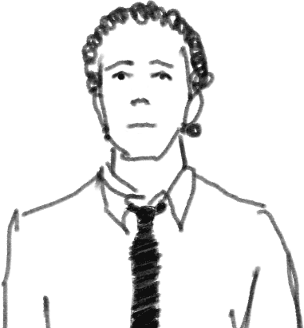

<div id="background">
	<video id="video1" class="backgroundVideo" preload="auto">
		<source src="assets/videos/Part1.webm" type="video/webm">
		<source src="assets/videos/Part1.mp4" type="video/mp4">
	</video>
	
	<video id="video2" class="backgroundVideo" preload="auto">
		<source src="assets/videos/Part2.webm" type="video/webm">
		<source src="assets/videos/Part2.mp4" type="video/mp4">
	</video>

	<video id="video3" class="backgroundVideo" preload="auto">
		<source src="assets/videos/Part3.webm" type="video/webm">
		<source src="assets/videos/Part3.mp4" type="video/mp4">
	</video>
</div>

<nav class="mainMenu" id="menu">
	<div id="mobileLogo">
		
	</div>
	
	
		
	
		
	
		
			<a href="#/about" class="menuItem hoverFade">About me</a>
		
	
		
			<a href="#/portfolio" class="menuItem hoverFade">Portfolio</a>
		
	
		
			<a href="#/blog" class="menuItem hoverFade">Blog</a>
		
	
		
			<a href="#/findme" class="menuItem hoverFade">Find me</a>
		
	
</nav>

<div id="container"></div>